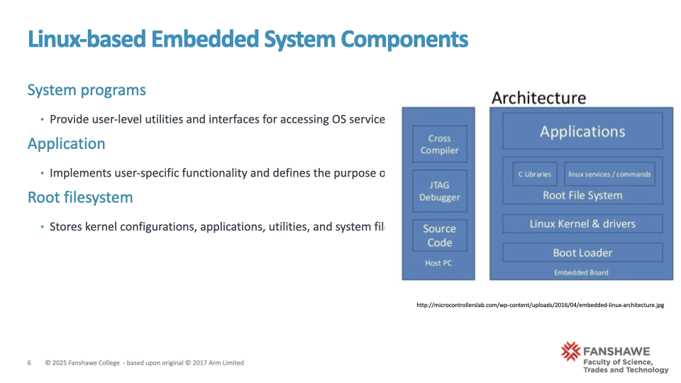

3 Module 02
3.1 Slides: Linux-based Embedded System Components
Narrative: “As we saw previously, embedded Linux systems rely on a structured set of core components. The Bootloader ensures hardware readiness at startup, preparing the system for the Linux Kernel, which manages critical resources. The kernel leverages a Device Tree for flexible hardware configuration without constant recompilation. System programs make interactions user-friendly, providing an accessible interface to system capabilities. Your actual application software defines the ultimate purpose of your embedded device, such as controlling industrial machinery or managing multimedia content. Finally, all this software and configuration data reside within a carefully structured Root Filesystem, ensuring that the system remains organized and operational.”

Components 1 of 2 Bootloader: At power-up, the bootloader prepares the hardware and facilitates the transition to the operating system. It initializes system resources and provides essential startup information to the Linux kernel.
Device Tree: This is a data structure that describes hardware components, allowing the kernel to configure and manage device drivers without needing hardware definitions to be hard-coded. The device tree is crucial for flexibility, enabling easier updates to hardware configurations.
Linux Kernel: The kernel is the heart of the embedded system, managing resources such as CPU, memory, processes, and I/O interactions. It provides a robust and versatile foundation, supporting various hardware architectures and extensive functionalities.

Components 2 of 2 System Programs: These include user-friendly utilities and services that facilitate interaction with the system hardware and kernel, simplifying development and maintenance.
Application: This refers to the user-specific software that delivers the embedded system’s core functionality, tailored to the product’s end-use.
Root Filesystem: The root filesystem stores the Linux kernel configuration, essential system programs, application software, and user-space utilities. It defines the operational environment and can be configured for persistent storage or temporary, RAM-based storage depending on system requirements.” Transition Statement:“Understanding these foundational components is vital for comprehending how Linux is structured within an embedded context. As we move forward, we’ll examine each component individually to appreciate their roles and interactions in greater detail.”
Suggested Resources:
- “Embedded Linux Primer” by Christopher Hallinan: ◦ Chapters detailing bootloader roles, device trees, and kernel fundamentals.
- Linux Kernel Documentation: ◦ Comprehensive explanations of the kernel architecture and subsystems (https:// www.kernel.org/doc/html/latest/).
- Device Tree Documentation: ◦ In-depth usage guidelines for DTS and DTB formats (https://devicetree.org/).
- Bootloader examples: ◦ Practical examples using U-Boot for embedded Linux devices (https:// www.denx.de/wiki/U-Boot).
- Embedded Linux Introduction
- https://community.intel.com/t5/Blogs/Products-and-Solutions/Software/Loading-and-Starting-a- Linux-Kernel-in-Five-Different-Ways/post/1571900
3.2 Slide: Hardware Reference Model

Narrative: “Embedded systems consist of hardware components carefully selected to meet specific performance and functionality goals. The CPU is the central component that executes instructions, controlling system operations. RAM memory provides fast, volatile storage for running software, crucial during system operation but cleared once power is lost. I/O peripherals allow the embedded system to interact with users and external environments through inputs (like sensors or buttons) and outputs (such as actuators or screens). The Boot Flash memory stores initial boot software that prepares hardware upon startup. Finally, the Mass Storage Flash holds the main operating system, applications, and any data requiring persistent storage.”
Helpful Resources for Further Development:
“Embedded Systems with ARM Cortex-M Microcontrollers in Assembly Language and C” by Yifeng Zhu (clear diagrams and foundational explanations of hardware components).
“Designing Embedded Hardware” by John Catsoulis (useful diagrams and practical descriptions of hardware components).
3.3 Slide: Hardware Reference Implementations
Narrative:
“In embedded systems, hardware implementations generally fall into two main categories:
Microcontroller-based implementations (MCU) typically integrate most system components— such as the CPU, small amounts of RAM and Flash memory, and basic I/O peripherals— within a single chip. These systems offer simplicity, cost-effectiveness, and lower power consumption, making them suitable for simpler embedded applications like automotive sensors, home appliances, and simple control systems.

Embedded System Hardware Reference System-on-Chip (SoC) implementations, on the other hand, integrate a broader range of advanced system components—including CPU cores, memory controllers, graphical processors (GPU), digital signal processors (DSP), advanced I/O peripherals, and even networking interfaces—onto a single silicon chip. This high degree of integration significantly reduces complexity, lowers power usage, and improves performance. SoCs are ideal for more complex embedded applications demanding robust processing, multimedia capabilities, extensive connectivity, or specialized tasks—examples include smartphones, tablets, smart TVs, automotive infotainment systems, and network routers. Understanding these distinctions helps engineers select appropriate hardware platforms based on application requirements, performance goals, cost constraints, and power budgets.”

3.4 Slide: Bootloader - Key Responsibilities

- Narrative: “At startup, a system’s processor cannot immediately run applications or even the operating system directly. Instead, it relies on a special software called the bootloader to initialize the hardware, prepare memory, and set up basic processor configurations. Specifically, the bootloader locates the kernel software, ensures it’s properly loaded into memory, and creates an environment suitable for the operating system to take control. In essence, the bootloader bridges the gap between hardware startup and operating system execution.”
- Supporting Resources for Further Exploration:
- U-Boot documentation (practical bootloader reference): U-Boot Project
- Bootlin Embedded Linux Training (Bootloader section): Bootloader Training PDF
##Slide: Understanding the Program Counter (PC)

Narrative:
- “Before diving deeper into system startup, let’s clarify the role of a critical CPU register called the Program Counter, or PC. The PC is essentially the CPU’s internal pointer, always indicating the memory address of the next instruction to execute.
- With each executed instruction, the CPU automatically updates the PC to point sequentially to the next instruction. At power-up or after a reset, the PC doesn’t point randomly; instead, it’s set to a specific, known address— called the Reset Vector.
- Understanding the role of the Program Counter is essential because it directly influences how software execution flows within a CPU.”